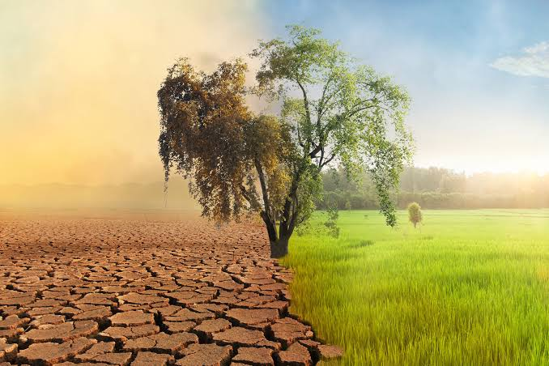
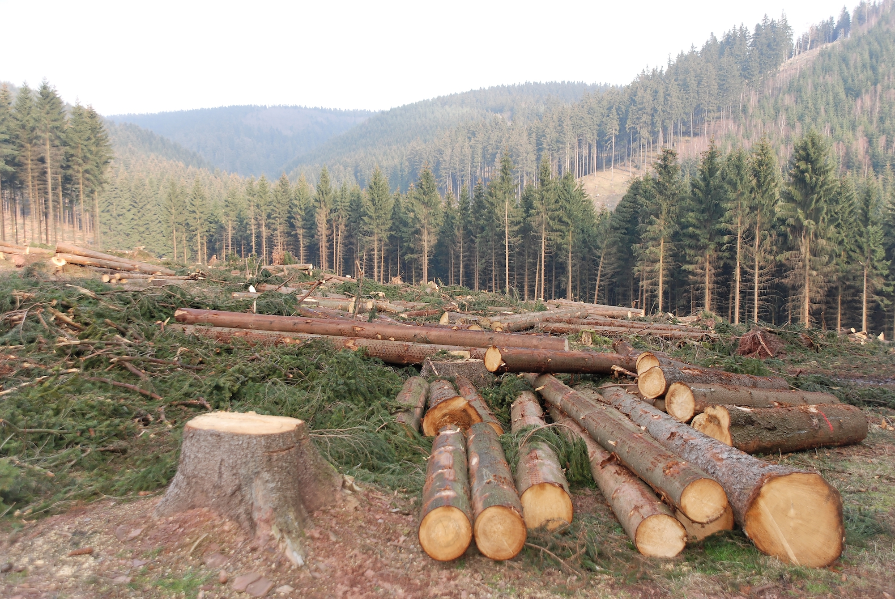
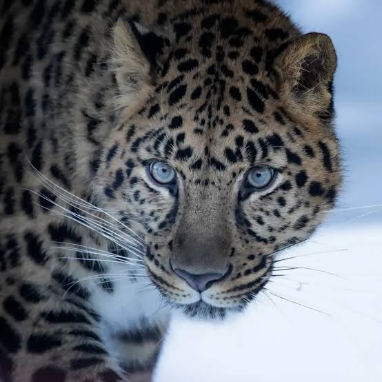

What enviromental Challenges do we face today?

Climate Change
Rising temperatures are cuasing extreme weather melting ice and distrupting the eco system. Right now the doomsday clock is set to 85 seconds till midnight the closest we have ever been to a global catastrophe.

Deforestation
Deforestation refers to the permanent clearing of forests by humans to convert the land to non forest use such as mining and urban development.

Loss of Biodiversity
A lot of animals and plants species are threatend by habitat destruction,pollution and climate change.The loss of biodiversity distrups ecosystems and threatens the balance of nature. animals like the amur leopard and javan rhino are currently going extict because of poaching and habitat loss.